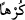
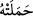
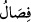

için de, zürriyetim için de iyiliği devam ettir. Ben sana döndüm. Elbette ki ben
müslümanlardanım.
“Biz insana, ana babasına iyilik etmesini” emir ve “tavsiye ettik.” Bu ana babasına
iyilik etme, ifâdesindeki fiil hazfedilmiş, buna delâlet eden masdarla yetinilmiştir. Ana
babanın paralelinde olup çocuğu doğuran yakın vâlidedir. Uzak vâlide ise onu doğuranı
doğurandır. Bunun için Havva (a.s.)’a arada bu kadar vasıtalar olmasına rağmen anamız
denilmiştir. Yine bir şeyin varlığına yahut terbiyesine yahut ıslahına yahut mebde’ ve
başlangıcına asıl olan şeye ana denilir.
“(Ana karnında) taşınması ile sütten kesilmesi otuz ay sürdü.” Bu otuz ay, annenin
çocuktan ötürü sıkıntılarla geçirdiği süredir.
“ kelimesi “ fiilinin fâilinden haldir. Yâni zorlanarak, meşakkat ve zorluk
çekerek demektir. Allah Teâlâ bundan gebeliğin anne karnında ağırlaştığı hâli murâd
etmektedir. Yoksa gebeliğin başlama hâlini değil. Çünkü gebeliğin başlangıcında zorluk
yoktur. Yahut bu “kürhen” ifâdesi “anne, çocuğu zorluk sahibi olarak taşımıştır”
demektir. “Onu zahmetle doğurdu” ifâdesi de aynı şekildedir. Artık bu zorluk doğum
sancısıdır. Hadis-i şerifte şöyle buyrulmuştur: “Ey Ezimme! Biraz zorlan, sıkı dur
kurtaracaksın.” Peygamberimiz (s.a.) bu sözü Ezimme isimli kadın, doğum sancısına
yakalandığı anda söylemiştir.[29] Yâni “ey Ezimme sabret, yakında doğumla birlikte
kurtulacaksın” demektir. Makâsidu’l-Hasene’de böyledir.
“, çocuğun sütten kesilmesidir. Bundan murad, son bulan tam bir süt dönemidir.
Bu durumda ifâde ya süt döneminden mecâz-ı mürsel olur. Çünkü çocuğun taşınması ve
sütten kesilmesi durumundan biri, diğerinin son bulmasıyladır. Bu durum bir mecâz
alâkasıdır. Şâir şu sözünde “emed” kelimesinden müddeti murad etmiştir:
Her canlı ömrünü tamamlayacak
Ömrünün müddeti bitince ölecektir.
Arapların “min ibtidai gâye”, “ila intihai gâye” yâni “min” başlangıç, “ilâ” sonuç
içindir, sözündeki “gâye” kelimesiyle mesafe murad edilmesi de bunun bir benzeridir.
“Şehr” ayın bir noktadan diğer noktaya deveranından oluşan on iki cüzden birine
itibar olunur. Yirmi dokuz yahut otuz günlük zaman dilimine meşhur olduğu üzre şehr/ay
denilmiştir. Bu âyet gebelik müddetinin en azının altı ay olduğuna delildir. Çünkü Allah
Teâlâ: “Anneler çocuklarını emzirmeyi tamamlamak isteyen kimse için tam iki yıl
emzirirler” (Bakara, 2/233) buyurmuştur. Sütten kesilme müddeti olarak bu otuz aylık
sürenin iki yılı düşürülünce, gebelik için altı aylık süre kalır. Tıp dünyasında böyle
denilmiştir. Fıkıh literatüründe süt müddeti Ebû Hanife’ye göre otuz ay, İmâmeyne
göre ise iki senedir. Bu ihtilaf süt hurmetinde yâni süt hükmünün sabit olmasındadır.
Annenin çocuğu emzirme ücreti olarak alacağı süt ücretine hak kazanması ise iki yıldır.
İmâmeyn’in delili Allah Teâlâ’nın “Anneler çocuklarını emzirmeyi tamamlamak